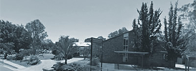
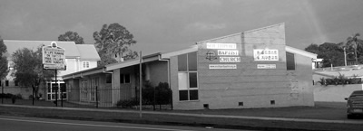
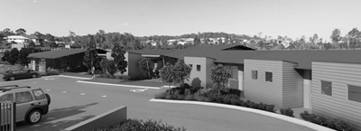

Current Sermon Series
God's Presence, Our Presents
We can easily feel overwhelmed in the weeks running up to Christmas. In fact, it's now extending to be the months leading up to Christmas, as the modern day cathedrals we call shopping centres start putting up decorations, setting out the seasonal stock, playing the Christmas tunes and launching their advertising campaigns. Why do they spend money on all this and why do we make our annual pilgrimage to the stores?
Because we have to buy gifts for our families, friends and colleagues, but why is Christmas a time of giving? Christmas is the time we celebrate God's gift to us in the Lord Jesus. Our Christmas sermon series looks at God's present to us, the gift of life through Jesus' death on the cross, and His presence in us as the Holy Spirit. Then we look at how this lies behind all giving at Christmas time; to each other, to those in need and to God Himself.
Come and join us at our Helensvale or Southport campus as we prepare for Christmas by thinking about God's Presence, Our Presents.
Subscribe
Recent Sermons from Helensvale
Christmas @ CrossLife
Celebrating together as a family, or as a community, is something special, and Christmas is one such time. CrossLife a baptist church (the new name for the former Helensvale and Southport Baptist churches whom came together earlier this year) continues to provide the opportunity for all of us to gather together and sing carols and celebrate the birth of the Lord Jesus at Christmas.
Our family friendly carols event will include carols, drama, a kid's time, birthday cake, and a FREE sausage sizzle so you don't have to worry about dinner. While the free sausage sizzle will begin at 6pm, the carols event will begin at 7pm and conclude by 8:30pm, early enough to get home before what is for most a big day ahead.
If you have any questions regarding the carols events please contact the CrossLife church office on 55 733 644. Also if you are interested in finding out more about what hope there is offered in Jesus please do not hesitate in contacting us or a local Christian Church in your area.
So many of us are coming along, we now have three events across two venues, so please come and celebrate with us:
When: Friday 21st December and Monday 24th December 2012 (Christmas Eve).
Where: CrossLife Helensvale campus (former Helensvale Baptist Church), 23 Discovery Drive, Helensvale.
Time: 6:00 for FREE sausage sizzle, 7pm for commencement of the Carols.
Cost: FREE!
When: Sunday 22nd December
Where: CrossLife Southport campus (former Southport Baptist Church), cnr Eugaree St and Southport-Nerang Rd, Southport.
Time: 6:00 for FREE sausage sizzle, 7pm for commencement of the Carols.
Cost: FREE!
Young Discoverers Signup
About Young Discoverers
Young Discoverers is the heart of how we serve the young families of our communities. It is a child care service based out of three centres to help young families as they raise their small children in a busy and complex world of work, school, family, financial pressures and everything else that makes raising children a complex task. Young Discoverers Child Care Centres are safe environments in which child can play and learn, and mum and dad can leave them confident that their needs will be well met by our professional and well supported staff.
The church background provides a safe governing structure and non-profit community heart which adds to the personal environment of each centre.
The mission of Young Discoverers is to provide the highest quality, family oriented Childcare by nurturing children in an environment of Christian love and care. The children at our centres have a great time with each other and with our excellent staff.
Our Centres
Our centre at Helensvale has been in existence since 1996 and is known as a great centre with high credentials when licensed. Due to the growing population and demand for child care on the Gold Coast, our second centre, at Highland Reserve Upper Coomera, opened in January 2013, situated right next to the community park and lake as part of the Highland Reserve Community Node.
Our third service is the Out of Hours School Care at Highland Reserve State School. We run before and after school hours care, and vacation care during school holidays.
If you want more information, or to book your child into any of these great ways of caring for your child, call 55 297 888
Community Node
Our commitment to serve and develop our surrounding communities on the Gold Coast led us to develop and manage the Highland Reserve Community Node at Upper Coomera in partnership with Stockland and Queensland Baptist. Here we are providing space for our Young Discoverers Long Day Care centre, a small 60n place community centre, and four community retail spaces. The node is a great partner to the park and is situated overlooking the Highland Reserve lake.
The node provides more than just services though. It is a community space with a heart for people so the whole community can benefit from a church serving its people in a variety of ways. We want to provide a haven of rest in the midst of a busy world! We imagine a place where the whole community together, businesses, the school, church and other community groups work together in a safe environment to help one another. A healthy vibrant community is good for business and good for families. And we believe it is just the sort of communities God had in mind, and the Lord Jesus wants to see blossom and grow all the more. Working alongside our new Highland Reserve CrossLife campus, we look forward to this vision becoming a reality.
At Highland Reserve, CrossLife is making its next step in helping the Gold Coast develop healthy vibrant communities where kids grow up safely and families thrive together. And behind it all in us is the Lord Jesus and His grace, strength and purpose.
Locations
Visit one of our campuses
Helensvale
Originally started as Helensvale and District Baptist Church in 1987, our Helensvale campus has a long history of serving the Helensvale community relationally, spiritually and in practical ways.
Service Times & Location
Sunday: 7.45am & 9.30am, Friday: 6.00pm
23 Discovery Drive, Helensvale
Southport
Beginning as Southport Baptist Church in the late 1950's, our Southport campus has been at the heart of the growth of Southport over many years and is looking forward to more of the same in the years ahead.
Service Times & Location
Sunday: 9.30am
170 Nerang Street, Southport
Highland Reserve
This is our new CrossLife Highland Reserve campus. CrossLife has been part of the early development of Highland Reserve and its presence is centred at the new Community node, a brand new venture in church planting.
Service Times & Location
Sunday: TBA
25 Rose Valley Drive, Upper Coomera
Our People
Meet our friendly pastoral staff
Matt Hunt
Lead Pastor
Matt is our Lead Pastor. Matt used to be a lawyer and loves talking and writing lots! He has followed Jesus since 1975.
Stu Quarterman
Helensvale Campus Pastor

Stu is our Campus Pastor at Helensvale. Stu was a teacher and loves running marathons. He started following Jesus in 1994.
Ken O'Rourke
Southport Campus Pastor
Ken is our Campus Pastor at Southport. Ken used to be a cameraman at the ABC and loves technology. Ken has been following Jesus since 1959.
Stefan Maslen
Highland Reserve Campus Pastor
Stef is our Campus Pastor at Highland Reserve. Stef has worked in retail, now he loves introducing people to Jesus, whom he has followed since 1992.